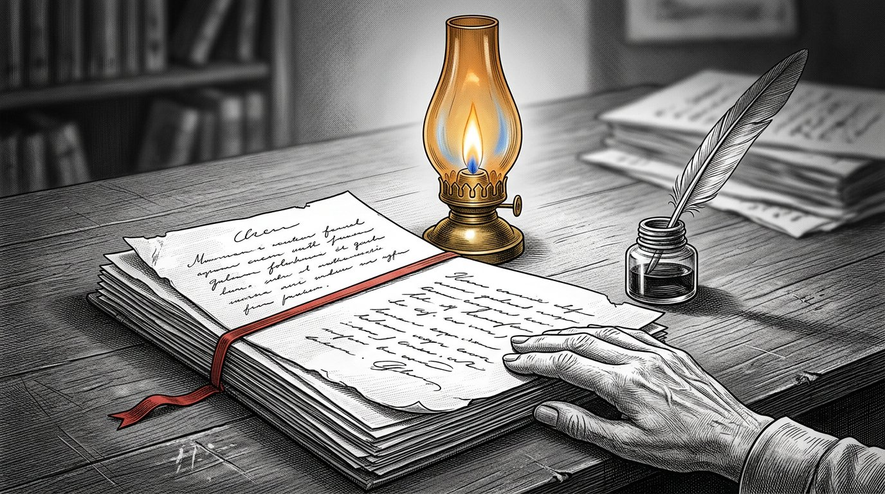
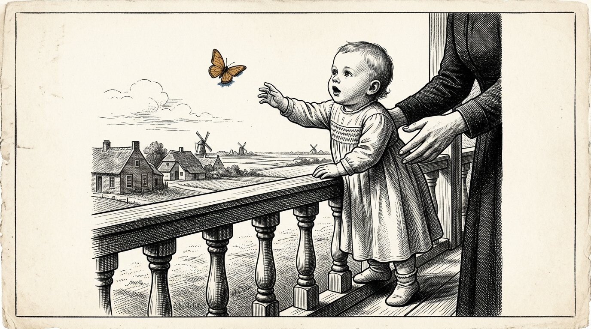
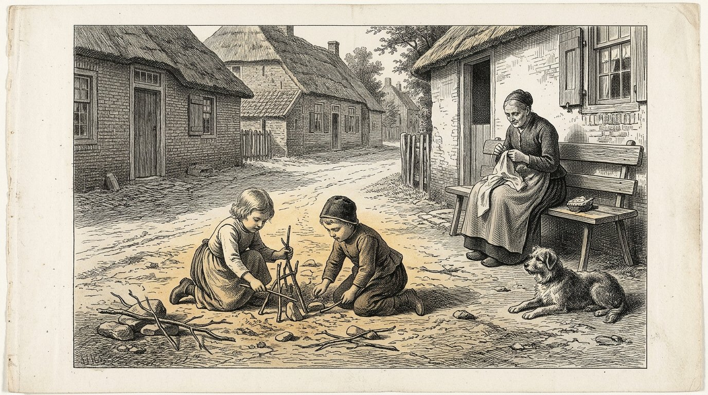
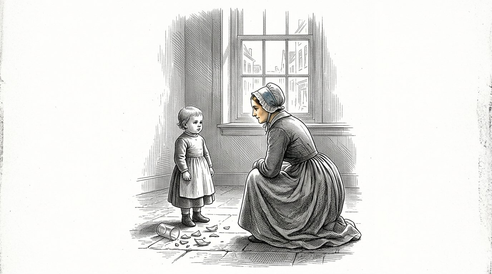
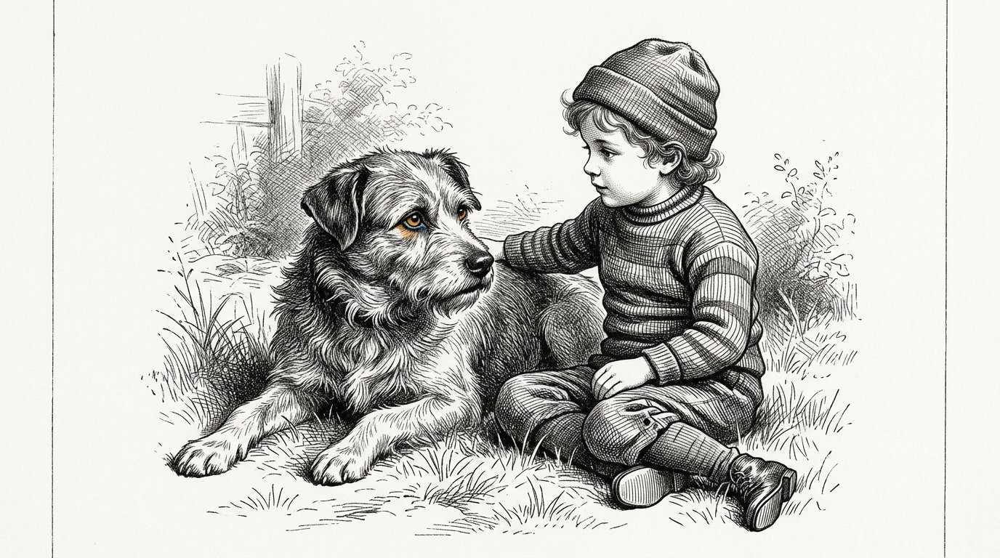
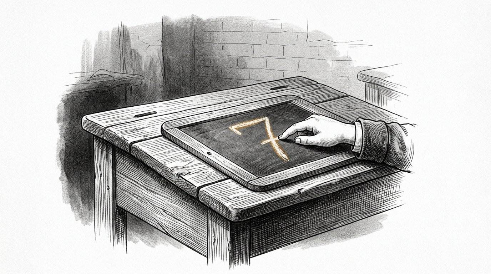
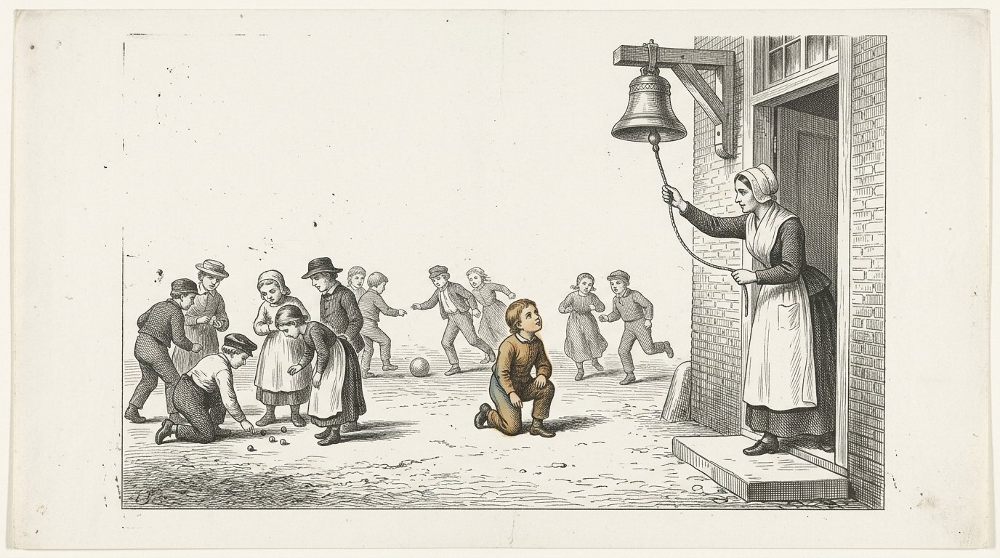
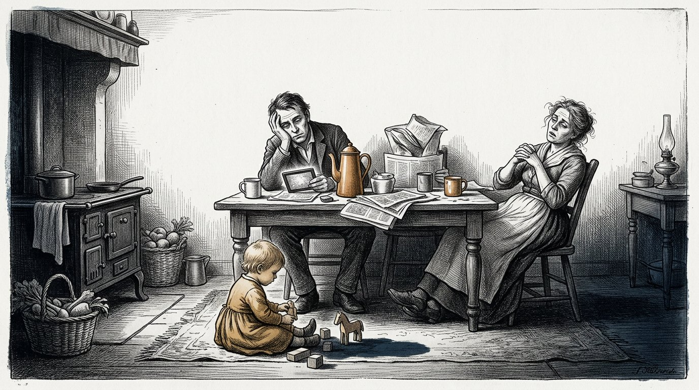

Foreword
This is the third book of the Kosaris and it was not begun by me.
It begins with fourteen pages that I wrote when I was twenty, about my grandmother Demira and about the old man who came to the bakery on Thursdays. I put them in a drawer and did not touch them for fifty-two years. When I found them again, I found them too certain. I changed nothing in them. I put one sentence beneath them and added the date.
The first book is about the four pillars. The second book is about the distinction between what is certain and what is assumed. This book is about the question that lies beneath it: how is a human being raised so that he can bear it.
A human being is not a singular creature. He is a stacking of layers, in the order in which they came into being, and each layer can arise only when the layer beneath it has solidified. This book follows that order and skips nothing.
Seven days. That is how long it takes before the egg knows that it is going on. Nothing enters during those days. Only form is made.
Seven months. The reptile. The child lives in two dimensions. This is not a figure of speech: a fish and a lizard have their eyes at the sides and see all around them, but their two eyes do not work together and there is no depth. Flat and everything at once. During those months the child learns to control its vital functions independently: breathing, staying warm, avoiding danger. No attachment, no empathy, no self-recognition — yet intact and reliable at its own level. After seven months that layer is complete, and yet a child is usually not born until around the ninth month. Nothing new is added during those two months. The layer solidifies. A layer is not complete when it functions; it is complete when it endures.
Seven years. The mammal. The eyes come to face forward, the two images begin to work together and from this depth arises — the third dimension. And with depth comes feeling. It does not solidify as a rule and not as knowledge, but as lived self-evidence, and it solidifies only in the presence of one human being who remains there for years. What does not solidify here will never solidify anywhere later.
What does not yet belong in those seven years is time. A mammal has time reflexes — a rhythm that returns, hunger at a fixed hour, a dog standing at the door on time — but he cannot plan. He cannot know that tomorrow will be different. Therefore those seven years should pass without an awareness of time: no clock, no calendar, no later, no goal five years from now. What must be laid down in those years is a reflexive foundation without time, and it comes only if we keep time outside it.
Then the human being. Only now does the fourth dimension enter as well: time. The child can think ahead to a day that is not yet there and already do something for it. From that moment onward, everything we have kept out for seven years may enter, and it enters easily, because there is something to lay it upon. Feeling and reason then run alongside each other, until fourteen and until twenty-one. At fourteen the ability opens to look at one’s own thinking. At twenty-one reason can take over — but only insofar as there is enough emotional foundation beneath it to bear it.
But a human being has more than four directions. There are seven: the three of space, time, and then size, value and number. Size is knowing how large something is and not merely being able to calculate how large something is. Value is what something is worth, regardless of whether anyone measures it. Number is being able to feel that one case is still nothing and that a thousand cases are something.
Those last three are not laid down in our schooling. They are taken away. A school reduces everything to a single measure, calls value what fits on the report card, and teaches calculation with numbers without ever giving them a feeling. A child emerges with four directions and thinks that is everything.
That last condition is the reason this book exists. A mind without an emotional foundation beneath it does not take over. It moves along with whoever last spoke to it.
Nowadays the second line lies much later in life, and for many it never comes. That is not because people learn less. It is because the years in which a human being is supposed to make mistakes have been filled with learning, and because the emotional foundation is missing on which the mistakes can land. Whoever has made too few mistakes has nothing on which to judge.
Seventy-seven. That is not an age at which a human being learns something. It is the time that passes before what one human being has learned returns in someone who did not know him.
I was a nurse, for forty-six years. I saw one hundred and nineteen children being born and I raised not a single one of them. That is a shortcoming in this book, and I would rather say it beforehand than have someone discover it afterward.
Where I do not know something, it says so.
Part 1
The fourteen pages

In which is set down what Anthea wrote at twenty about her grandmother and the old man, and what she added beneath it fifty-two years later.
What I saw when I was little

I saw colours around people. I kept that from everyone for a long time, because my mother was worried by it and my grandmother was not, and it was easier to be with my grandmother.
I do not know what it was. I later studied it and I never found a name for it that was right. The doctors have names for it, and those names do not cover it.
What I do know is when it went away. It went away when I was fourteen, in the winter when my grandfather died, and it never came back.
I grieved over that for thirty years.
Now I am old and now I think about it differently. I no longer think that I lost something. I think that something was added on top.
Something came along that began to look at what I saw, and asked whether it was really true.
That thing never went away again. It is still there now, and at this moment it is looking at this sentence and asking whether I really know this.
I am not certain.
But in fifty years I have seen the same thing happen in fifteen children, at roughly the same age, and that is not proof but it is not nothing either.
Anthea writes:Something comes along that looks. That is not the end of the child. That is the second layer opening.
My grandmother and the sacks of flour

My grandmother weighed every sack of flour. I saw her do that five thousand times and I never looked at it as one looks at something extraordinary, because that is how it is when you are little.
I thought weighing belonged to baking.
She never explained to me why she did it. She never told me that it was important or that I had to remember it.
She weighed and I stood beside her.
When I was seventeen and began at the clinic, on my first day I counted the little bottles in the cupboard, and the nurse asked why I did that, and I said I did not know.
I did not know.
It was only much later that I discovered I had got it from the bakery.
What I have learned from that is the most unpleasant thing in this entire book: the most important thing my grandmother taught me, she never taught me.
She did it while I was there.
Everything she did explain to me, in words, intending that I should remember it, I have forgotten.
Anthea writes:A child does not take over what you say. It takes over what you do while saying something else.
The old man and the question

The old man came to the bakery on Thursdays and I was often there, because I liked being there.
He always asked the same thing and he always asked it differently.
He never asked what I knew. He asked how I knew it.
When I was eight, I found that annoying, because I wanted to tell him what I knew and it was a lot.
When I was eleven, I began thinking it over beforehand. I began thinking about what I would answer if he asked it, and because of that I began looking differently at what I saw.
That is what he did. He never taught me anything. For three years he asked me the same question, until I began asking it myself before he came in.
And then he stopped.
I asked him about it later, when I was nineteen. I asked why he had stopped.
He said: "Because you have it yourself now."
I then said that he could have said so. That would have saved a lot of time.
He said that was not true, and he was right, and it took me another twenty years to understand why.
A question you are given, you can answer.
A question you ask yourself, you can no longer put aside.
Anthea writes:Do not teach the child the answer. Ask the question so often that the child takes it over.
Part II
Part 2
Seven days — the skeleton

In which nothing comes in and only the form is set up in which something can come later.
The week in which nothing happens

It takes seven days before a fertilized egg settles in.
Seven days in which it is on its way and in which, as far as we can see, nothing happens that is worth naming.
Nothing is added. Nothing is fed. There is no connection with the mother and the mother knows nothing.
Only form is made.
I have never seen this with my own eyes and I never will. I know it from books and I say that explicitly, because almost everything else in this book is what I myself have observed.
Still, I write it down, and for this reason.
At the clinic I have seen a hundred times that people become impatient during a phase in which nothing happens. They want something to come in. They want to feed, speak, teach, touch.
And the first week of a human being is a week in which nothing comes in and in which the only work consists of setting up the form in which something can come later.
Whoever already wants to give something in that week gives it to something that does not yet exist.
That is how it is at the beginning and that is how it is in every phase afterward.
Anthea writes:Before life can begin, the form must be there. Nothing happens in that week, and that nothing is the work.
The house that already had a rhythm

There were two houses on the same street where a child was expected in the same year.
In one house everything was made ready. A cradle arrived, supplies arrived and blankets arrived, and everything lay ironed in a cupboard.
In the other house all that arrived too, and in addition something happened that no one noticed.
The woman there had begun eating at fixed hours. She went to bed when it grew dark and got up when it grew light, and she had been doing that for four months before the child was there.
She did not do it for the child. She did it because she slept badly and because someone had told her it helped.
I followed those two children until their second year.
The second child slept. The first did not.
I do not know whether that was the reason. There were ten other differences between those two houses and I measured none of them.
But since then I have said the same thing to every woman who wanted to hear it, and I say it here too:
The rhythm of a house must be there before the child is there.
A clock that only begins to tick when there is something to measure is not a clock. That is a reaction.
Anthea writes:Set the rhythm before the child is there. A clock that only starts ticking when there is something to measure is not a clock.
Who was already standing ready

In every house there is someone who decides what comes in.
That is usually no one in particular and it is never agreed upon. It is the person who says: we do not do that here, or: let them in, or: that man is not coming in.
I have seen what happens when that person is no one.
There was a family where everyone was welcome and where everything came in. Neighbors came, stories came, a radio came and later all kinds of things came on a screen, and there was never anyone who said that something was not coming inside.
That was praised. People called it an open house.
The children there grew up with everything.
What they did not have was one person who occasionally held something back.
It is not about holding back a great deal. In that house almost nothing was truly harmful.
It is about a child experiencing that someone is standing at the door.
Whoever has never experienced that does not build one either.
At thirty, that person stands open to everything that comes along, and calls it open-mindedness, and never chose it.
Anthea writes:Someone must be standing at the door before something comes to the door. A child who has never seen that does not build a door itself.
Part III
Part 3
Seven months — the reptile

In which things are viewed flatly and all around, and the life functions are laid down — breathing, staying warm, avoiding danger — and in which it becomes clear that a layer is only finished when it can endure.
The eyes that face sideways

Look at a fish.
Its eyes are set on the sides of its head. It sees left and it sees right and it sees almost everything around it at once. There is almost no place from which you can approach it without it seeing.
That seems better than what we have, and in one respect it is.
But it sees flatly.
Its two eyes do not work together. Each looks in its own direction and there is nothing in it that lays the two images over one another. That is why it does not know how far away something is. It knows that something is there, and roughly where it is, and no more.
A lizard has the same.
That is what I call the two dimensions in this book. Not an idea — a way of looking. All around, flat, everything at once, no depth.
For what those animals have to do, it is enough. Fleeing requires no depth. Fleeing only requires that you know something is there.
A child in the womb does not need that depth either, because there is nothing far away.
Everything that exists touches it.
Anthea writes:Two dimensions are not an idea but a way of looking: all around, flat, everything at once, no depth. For fleeing, that is enough.
Breathing without air

A child practises breathing for months before there is air.
It makes the movement in the fluid in which it lies. It takes nothing in, because there is nothing to take in. It only makes the movement, thousands of times, without it leading anywhere.
I felt it with my hand in a woman in her seventh month. A series of short thrusts, four or five in succession, and then stillness.
She thought it was hiccups and it is that too, more or less, and at the same time it is something else.
It is a being rehearsing an action for which the world does not yet exist.
When the child is born, it must breathe within a few seconds. There is then no time to learn. There is no first attempt.
Everything that must happen then has already been practised for seven months in the dark.
A reptile lives in two directions. It moves forward and it moves sideways, and it keeps to the surface on which it lies. It does not climb and it does not jump and it has no understanding of above.
That is how a child also lies in those months. It turns and it shifts, but there is no above and no below, because it floats.
That is why in this book I call the reptile the first layer and not the lowest.
There is a part in a human being that puts itself in order without anyone being there and without there being anything to learn from another.
That part needs no love and no words and no encouragement.
It needs rest and it needs time, and it is the only part of a human being that is finished before it is born.
Anthea writes:The first layer rehearses in the dark an action for which the world does not yet exist. That layer needs no love. It needs rest.
The warmth that is not its own

A child in the womb is always equally warm.
It does not regulate that itself. It receives the warmth from its mother and has to do nothing for it, and that is how it remains for seven months.
And then it is born, and within an hour it must begin doing that itself.
That is the hardest transition in a human life and it lasts about a day.
I have seen children who could do it immediately and children who could not, and the difference does not lie in the love they received.
That is why we lay a newborn against its mother and not in a cot. Not out of tenderness. Because one body keeps another body warm while that body learns to do it itself.
What I learned from that applies not only to warmth.
There are things a person first receives from another and must then begin to make for themselves.
If they must make them for themselves too soon, things go wrong. If they receive them from another for too long, they never learn.
With warmth, it is a matter of hours and we can see it.
With everything that comes afterwards, it takes years and we do not see it.
Anthea writes:What a person first receives from another, they must then begin to make for themselves. Too early, things go wrong; too late, they never learn.
The fright that must be there

A hatch slammed shut in the clinic and a woman who was heavily pregnant was startled.
And beneath her hand the child was startled too.
She felt it and looked at me and said: "He heard that."
I then said that he had not heard it as we hear, and that is what people say, and I no longer know whether it was true.
What happened in any case was this: a strong stimulus came and a withdrawal followed, and there was nothing in between.
No thought. No deliberation. No question of whether it was dangerous.
That is the third life function and it is the most important of the three, because breathing and staying warm keep a being alive and avoiding danger keeps it whole.
In my life I have known three people in whom that reflex did not work properly.
They were not brave. Courage is something else; courage is being afraid and going anyway. They were not afraid.
All three died young and of none of them can I say that it was because of that one thing.
But I write it down because nowadays we go to great lengths to keep children from being startled.
Fright is not harm.
Fright is the oldest layer there is, and it was there before anything else was.
Anthea writes:Avoiding danger is neither fear nor weakness. It is the oldest layer, and it was there before anything else was.
The two months that remain

After seven months, the reptile is finished.
Everything a body needs to govern itself is there then. Breathing, warmth, startle. A child born in the seventh month can remain alive, and that is not a miracle but the ordinary outcome of a layer that is finished.
And yet a child is usually not born until two months later.
I wondered about that for a long time, and I have not resolved it.
What I have seen is this. In those two months nothing new is added. No new function is laid down. The child grows heavier and its skin grows thicker and its lungs grow roomier, and that is almost all.
The layer is finished and it becomes fixed.
In the children who came too early, I saw what the difference is. They could do everything. They could do it for less time.
That is the form in which I came to understand it, and I will say at once that these are my own words and not those of a doctor:
a layer is not finished when it works. It is finished when it can endure.
Whoever closes a phase at the moment they see that it works closes it two months too early.
Anthea writes:A layer is not finished when it works. It is finished when it can endure.
Part IV
Part 4
Seven years — the mammal

In which the third direction joins in and feeling congeals, not as a rule but as a lived self-evidence — and in which the fourth direction is kept away for another seven years.
The third direction

There comes a day when a child pulls itself up.
It lay, it sat, it slid across the floor — and then it grasps the edge of a chair and comes up, and stands, and falls over.
What joins in that day is the third direction.
It began earlier, and it began in the eyes.
A mammal has its eyes facing forward. It sees less than the fish — there is a whole world behind it that it does not see and for which it must turn around.
What it gets in return is that its two eyes see the same thing from two places, and that there is something in it that lays those two images over one another.
From that, depth arises.
From that moment on, it is not only that something exists, but how far away it is. There is grasping. There is too far. There is almost.
A newborn does not yet have that. It takes months for its eyes to learn to work together, and it happens by itself and no one sees it happen.
As long as a child is on the ground, it lives as the reptile lived: forward and sideways. There is no above that it can reach by itself.
From the moment it stands, there is height. There is something too far away to grasp. There is a table with something on it. There is falling.
And with it something else joins in, which begins at the same moment and which no one connects with the third direction.
The child looks around.
It pulls itself up, it stands, and then it turns its head to see whether anyone has seen it.
I have seen that in very many children and it is always in the same week as standing.
The mammal does not come loose from space. It comes along with space.
Whoever has height can fall. Whoever can fall needs someone who watches.
Anthea writes:With the third direction comes the mammal. Whoever has height can fall, and whoever can fall looks around to see whether someone is watching with them.
What a newborn does

I have seen one hundred and nineteen children born in forty-six years.
A newborn does four things in the first week. It breathes, it drinks, it sleeps, and it screams.
That is all. It seems little and it is almost everything that is laid down in a human life.
For what happens in that week is not that the child learns something. It is that the body establishes what kind of world it has ended up in.
Will someone come when I scream, or not.
That is all. It is one question and the answer does not come in words but in how quickly someone comes.
I have seen children for whom someone always came and children for whom someone usually came and children for whom it varied.
The variation is the worst. I do not know that from a book, I know it from watching, and I will say at once that I did not measure it and therefore do not know it for certain.
But I have seen it too often not to write it down.
A child can withstand little. A child cannot withstand unpredictability.
Anthea writes:In the first week a human being learns nothing. In the first week it is established whether the world answers.
The five translations

There was a child who had five caregivers. That was not out of indifference. The mother worked, the father worked, and there were two grandmothers and a neighbour, and they all gladly did it.
The child was well cared for. It was never left alone, it lacked nothing, and there was always someone who came.
I followed that child because it came to our clinic for something wrong with its ear.
What struck me only struck me after a year.
When the child became restless, the mother said: you are tired. One grandmother said: you are hungry. The other said: you are fidgety. The neighbour said: you want to go outside.
All five loved it and all five were sometimes right.
But the child received five names for one feeling in its body.
A child does not know instinctively what hunger is. It feels something uncomfortable. It only learns what that is because someone repeatedly says the same thing with the same feeling.
This child did not learn that. It began to guess.
It became a pleasant child and a good student and was never treated for anything.
At nineteen it said to me, in the same clinic, in the same chair: "I never know what I feel."
Anthea writes:A child does not learn what hunger is from hunger. It learns it because the same person repeatedly says the same word with it.
The child who read the face

A five-month-old child understands no word.
It reads a face faster than you can make one.
I checked that a hundred times, because at first I did not believe it. I sat down with a mother and had her say something friendly while she was thinking about something unpleasant.
The child knew. Every time.
Not because it is clever. Because it has nothing else. It has no words, so it has only the face, and it looks at that face as you look at a weather report when you have to put out to sea.
That is why it does not work to act cheerful toward a baby when you are not.
What does work, and this is the strange thing, is simply being there while you are not.
I had a mother whose husband had died when the child was three months old. She could not be cheerful and she no longer made any effort to seem so.
She was simply there. Every day, for hours, sorrowful and present.
That child came through all right.
A child can withstand sorrow that is there. A child cannot withstand a face that says something other than what it feels, because then the world does not make sense, and it cannot yet ask how that is.
Anthea writes:Do not pretend. The child reads you before you can speak.
The looking back

There comes a day when a child looks at you and then at something else and then back at you to see what you think of it.
That is new. It could not do that the month before.
From that moment on, the child is no longer concerned only with what is happening, but with what you think of what is happening.
That is the beginning of everything that will later be called feeling, and it is also the beginning of everything that will later go wrong.
For from now on it takes over.
If you are afraid of dogs, then in three years the child will be afraid of dogs, and you have never told it anything about dogs.
I was able to follow that in four families because I had been there long enough.
It does not pass through words. It passes through that one moment in which the child looks back at your face and sees what is there.
That is why this is the hardest time of all to be a parent.
There is nothing to do. There is only something to be.
Anthea writes:As soon as the child looks back to see what you think of it, you pass on what you are and not what you say.
On time without a clock

There was a dog in the harbour that stood by the school every afternoon at ten to four.
People said it could read the clock, which is nonsense, but it was there, every day, and it was never late.
Once I paid attention to what it did before it went.
It lay by the nets. At a certain moment it got up and went.
Nothing had changed in the harbour. There was no bell, no person leaving, nothing to see.
It knew it in its body.
And yet that animal cannot plan.
If you had wanted to make it understand on Wednesday that the school would be closed on Thursday, that would have been impossible. Not difficult. Impossible.
It went on Thursday, and stood before a closed door, and went again the Friday after.
That is the difference, and it is a greater difference than it seems.
A rhythm in the body is not time. It is a reflex that returns.
Time is something else. Time is knowing that tomorrow will be different from today, and already doing something with that now.
A mammal cannot do that, and neither can a four-year-old.
Anthea writes:A rhythm in the body is not time. It is a reflex that returns. Time is knowing that tomorrow will be different.
The word later

There is one word I have never grown accustomed to in the clinic, and that is later.
A mother says to a four-year-old: later.
She means well. She means: not now, but it is coming.
The child does not hear what she means, because to hear what she means you must be able to imagine tomorrow, and it cannot yet do that.
What the child hears is no.
And because it hears no while the mother means yes, something does not make sense, and the child cannot say what.
I have seen that happen a hundred times and have said nothing about it a hundred times, because what is one supposed to say then.
What I have seen, though, is what happens with people who do it differently.
They do not say later. They say: first this, then that. And then they do that first thing while the child is there, and afterwards the other.
The child then has nothing to bridge. It only has to watch.
That costs the parent more time. That is the whole price.
We invented that word so as not to pay that price.
Anthea writes:A four-year-old hears no promise in the word later. It hears no. Say: first this, then that, and do it where the child can see.
Part V
Part 5
What goes in during those seven years

In which the four pillars are not taught but experienced, in which the bottom layer is laid down and thereafter no longer opens, and in which it becomes clear that the parent cannot do it alone—for a parent steps aside and another six-year-old child does not step aside.
The layer that no longer opens

I have seen the following three times, and it is the reason I began writing this book.
People come to the clinic who can do everything. They are clever, they are diligent, they are not mean.
And there is something in them, underneath, that is not right, and nothing you do reaches it.
You can talk to them and they understand everything you say. They can repeat it back. They agree with you.
And it does not change.
It took me a long time to accept that there is something you cannot reach with words.
The upper layer of a person changes in a conversation. The middle layer changes in a year or ten.
The bottom layer is the layer laid down in the first seven years, and it does not change anymore. Not through talking, not through studying, not through wanting.
I am not writing this down to call anyone hopeless. A person with a crooked bottom layer can have a good and happy life, and I have known many of them.
I am writing it down because it means that the first seven years are not one of the stages.
They are the only stage in which you can reach the bottom layer.
Anthea writes:The upper layer changes in a conversation. The bottom layer changes in seven years, and never again thereafter.
The ground

I once heard a farmer say that you establish a field once in your life and then work it two hundred times.
That is how it is with a child.
In the first seven years you lay the foundation. After that you cultivate it.
What goes in during those seven years is not knowledge. Knowledge comes later and knowledge comes easily.
What goes in are four things, and I call them what I came to call them in the clinic.
The first is: someone comes when I call.
The second is: what is said corresponds to what happens.
The third is: I may break something and I am still welcome.
The fourth is: someone considers me worth giving time to, even when nothing comes of it.
Those are the four pillars, but as a three-year-old child experiences them. The child does not know the words and will never know them in this way.
It only knows whether it was true.
Anthea writes:The four pillars are not taught. They are experienced, or not, in the first seven years.
The child who broke the glass

A four-year-old child broke a glass.
There are three ways it ends, and I have seen all three a hundred times.
The first is that the child is yelled at. Then the child learns that a mistake is dangerous and begins hiding mistakes. That child will still be hiding mistakes at thirty.
The second is that nothing happens and the mother clears up the glass and carries on. Then the child learns that a mistake is nothing. That child will leave messes behind at thirty and not notice.
The third is that the mother says: the glass is broken, we will clean it up together, watch out for your fingers.
Then something happens that does not happen in the other two cases.
The child learns that a mistake has a consequence and not a punishment, and that the consequence can be borne, and that afterward things are all right again.
That is the entire secret of this book, and it fits into one household task.
I have heard parents call this: being strict. It is not being strict. Being strict is the first way.
It is letting the child remain with the consequence.
Anthea writes:Punishment teaches concealment. Nothing teaches indifference. The consequence teaches endurance.
The mother who read too much

A young mother came to the clinic who had read everything. She had read three books and knew the charts.
Her child cried and she looked at the clock.
The book said that a child may cry for twenty minutes after feeding, and that afterward it will fall asleep on its own, and that is true, because that is what happens too.
She was doing it right according to the book.
I said nothing about it for three months, because it was not my place.
In the fourth month she asked me herself what I thought of it, and then I told her.
I said: "You are looking at the clock. Look at the child."
She said the book had been written by someone who knew what they were talking about.
That was true. I said so too.
Then I asked whether the book knew her child.
She began to cry and I remained sitting there and said nothing, because there was nothing to say. For four months she had done what a sensible person had advised her.
There are two kinds of knowing. There is knowing what generally applies, and that is real knowledge and it is worth a great deal.
And there is knowing who is lying before you.
The first you can read. For the second, you must look.
Anthea writes:The book is true. The book does not know your child.
The street where no one looked

Behind the harbor lay a street where the children played and where no adult was present.
It was not a decision. That was simply how it was.
Things happened there that did not happen at home. There was pushing. There was exclusion. Something was taken away and there was crying over it.
It usually lasted half an hour and then it was over, and no one had mediated.
I saw later what that street did.
At home, a parent adapts. He cannot help it and it is also good that he does. He softens things. He steps aside so the child can pass.
Another six-year-old child does not do that. That child does not step aside.
There a child learns where it itself ends.
I do not know how you are supposed to imitate that at home, and I do not believe it can be done.
The street is no longer there. There is traffic now, and the children are indoors, and when they see one another it has been arranged by two mothers who have coordinated the time.
There is no pushing then.
Anthea writes:A parent steps aside. Another six-year-old child does not step aside. There a child learns where it itself ends.
The animal that did not pretend

There was a seven-year-old boy staying at our clinic with a broken arm who did not speak.
Not out of stubbornness. He had learned that what he said was checked, and so he preferred to say nothing.
There was a dog on the grounds. No one's in particular.
That dog came and lay beside him, and the boy placed his good hand on the animal's back, and so they lay for an hour.
I heard him speak to that dog afterward. Not much and not beautifully, but he spoke.
An animal does not ask whether you can substantiate it.
It feels without words, reacts without explanation, accepts or refuses, and is ashamed of nothing.
A child who is with an animal notices that there is something within itself that does not consist of language, and that this something also exists in other living creatures.
You cannot tell a child that.
There must be a dog.
Anthea writes:An animal feels without language and refuses without shame. Through that, a child notices that its own feeling does not consist of words.
The same piece of ground, for nine years

In the Saturday lesson, the children were given a piece of ground. Not each their own piece; one piece for all of them, behind the house by the quay, about the size of a room.
It was worked for nine years by ever-changing children.
They tried all sorts of things on it. There was a year when nothing came up. There was a year when too much came up and it rotted.
What the children learned there is written in no notebook.
They know what it smells like when the wind turns. They know that it begins in the third week of March, even if the calendar says otherwise. They know that a plant that comes up too quickly usually does not endure.
I heard one of them say at thirty that whenever she makes a decision, she thinks of something that came up too quickly.
She no longer knew where she had got that from.
Nature does not lie and does not flatter and does not adapt itself to the child. It does what it does.
For a child there is no more honest conversational partner, nor one that demands so much patience.
Anthea writes:Nature does not flatter and does not adapt itself. A child who follows one piece of ground for years learns a measure that is written in no notebook.
Part VI
Part 6
After seven — the fourth direction

In which the intellect opens and everything enters, provided the feeling beneath it has solidified and it is not explained too soon.
The fourth direction

After seven years, something is added that was not there before, and it is not a direction in space.
The child can suddenly move forward.
Not walk — it could already do that. Forward in time. It can think of a day that is not yet there and already do something for it now.
I saw that clearly once.
There was a seven-year-old boy who made a boat out of wood, and he did not put it in the water in the morning because it was going to be windy that afternoon.
The year before, he would have launched it immediately and lost it.
No one had told him anything about the wind.
That is the fourth direction, and it is the first that has nothing to do with the body.
From that moment on, everything we have kept away for seven years may come in. The clock. The week. The calendar. First doing what will pay off later. Saving. Waiting.
That enters easily now, because there is something to lay it upon.
Whoever lays it in earlier lays it upon nothing.
Then he gets a child who can read the clock and who inwardly still does not know that tomorrow exists, and no one sees that difference, because the child says the right things.
Anthea writes:Time is the first direction that has nothing to do with the body. It comes after seven, and it comes easily, provided there is then something to lay it upon.
What opens on the seventh birthday

Something happens around the seventh year, and it happens quickly.
The child can suddenly reason. It can think in if-then terms. It can apply a rule to a case it has never seen before.
This is the age at which school begins in almost every country, and that is no coincidence; people discovered it separately everywhere.
What enters now enters easily. Arithmetic, reading, languages, music. Everything.
But there is something people rarely say.
It enters the layer that lies above it.
If the layer beneath it lies crooked, the child becomes a good student with a crooked foundation, and no one notices, because the grades are good.
I have often seen that and have never been able to do anything about it, because a child with good grades receives no help.
It comes to the surface when the child is eighteen, or twenty-five, or forty.
Usually forty.
Anthea writes:From seven onward, the child learns everything. What it learns comes to rest on the ground that is already there.
The story and the question after it

There were two people who told stories to children.
One told the story and then fell silent.
The other told the story and then asked: and what does this story mean to you?
Both were good people and the second made more effort.
I sat with both of them and watched the children, not the storyteller.
With the first, the children remained seated for a moment afterward. Some looked at nothing. Then they went on with what they were doing.
With the second, hands immediately went up.
The difference lies here. A story works on a layer that uses no words. It lays down a pattern of how things turn out, and that pattern sinks away and remains there.
When you immediately ask what it means, you bring it up before it has sunk in.
Then the children have a fine conversation and the story is gone.
I once said that to the second storyteller and she became angry about it, and I understand that, because she had tried harder than the first.
Anthea writes:Tell the story and be silent. What you bring to the surface immediately has never sunk in.
Why not everything needs to be answered

A five-year-old asks why a hundred times a day.
Parents are told that they should answer those questions, and that is usually good advice.
But I once knew a father who did it differently, and I watched that child grow up, so I am writing it down.
He answered about half of them. With the other half he said: "I don't know. How could we find out?"
That is an annoying answer for a five-year-old, and the child regularly became angry about it.
But that child began to ask differently.
After a while it began saying on its own: "I think it is this way, because I have seen that..."
It did that at the age of six.
The children for whom everything was answered were still asking why at twelve, and they still expected there to be someone who knew.
There is a difference between a child who knows and a child who can find things out, and it is not the case that the first naturally leads to the second.
Usually it does not.
Anthea writes:Answer half. With the other half, ask how you can find it out together.
What a child learns from a grade

A grade says how good the answer was.
It says nothing about how the answer was arrived at.
Two children get an eight. One thought it through and worked it out. The other guessed, and guessed correctly.
They get the same grade and they both learn something, and what the second one learns is the most dangerous thing there is.
I tried something different in the Saturday class and I do not know whether it was right.
I gave two grades. One for the answer and one for how they had found it.
That second grade could be higher than the first. A child who had got it wrong but had searched well received a four and a nine.
The children understood that faster than the parents.
The parents looked at the first grade.
After half a year, the children began asking about the second.
Anthea writes:Give two grades. One for the answer and one for the path that led to it.
Part VII
Part 7
The Last Three

In which the fifth, sixth, and seventh directions are described — size, value, and number — and in which it becomes clear that schooling does not teach them but takes them away.
Everything the Same Size

There was a boy at the school by the quay who lost his grandfather on a Monday and missed a test that same week.
For missing the test, he received a note.
For losing his grandfather, he received a kind word from the master at the door.
I do not say that the master did wrong. There was nothing else he could do.
What I write down is what the boy learned from it, and that is something different from what the master intended.
He learned that there is one measure by which things are reckoned, and that his grandfather does not fit into it.
At a school, all things are reduced to the same measure. A missed test, a careless sum, a forgotten book, a quarrel in the playground, and a dead grandfather all five pass through the same window and all five emerge as a note or no note.
That is how a child does not learn how big something is.
And whoever does not learn how big something is does not know at forty which of his worries are his own.
He lies awake over an email and sleeps through a divorce.
Anthea writes:At school, a forgotten book and a dead grandfather pass through the same window. That is how a child never learns how big something is.
How Big Is a Thousand

I once asked a class of eleven-year-olds how long a thousand days lasts.
They could calculate it. All sixteen of them.
They divided by three hundred and sixty-five and arrived at almost three years, and that was correct.
Then I asked what they had been doing three years earlier.
Then it grew quiet, and then all sorts of things came: I was in another class, my little sister had not been born yet, we still lived by the harbor.
And at that moment I saw it happen in two of them.
They looked up. Something had passed from the number into their bodies.
The other fourteen had given a correct answer and felt nothing.
Size is not calculating how big something is. Size is knowing how big something is.
We teach children the first very well. We do almost nothing with the second, and the second is the only one of the two that leads anywhere.
A person who can calculate that a debt lasts ten years but does not know how long ten years is signs that debt.
Anthea writes:Calculating how big something is and knowing how big something is are two different things. We practice only the first.
The Measure of the Harbor

Alkion's grandson could estimate a boat.
He looked at a ship entering the harbor and said how much it was carrying, and he was rarely off by more than a tenth.
He had not learned it anywhere. He had grown up with it.
I asked him how he did it and he could not say. He said he could see it from how deep it lay and how it lay in relation to the pier.
The point is that he had a measuring stick outside himself that always remained the same: the pier.
A child who grows up among things that do not change acquires such a measuring stick. The church tower. The width of the street. The time it takes to walk to the other side.
A child who grows up among screens does not acquire one, because there everything is the same size. A mouse and an elephant and a galaxy are all as wide as the image.
I do not know what takes its place.
I searched for it for a long time and found nothing.
Anthea writes:Size is taught to a child by something that does not change. On a screen, everything is as wide as the image.
Everything at the Same Distance

An eye is a muscle.
Whoever looks at the horizon relaxes it. Whoever threads a needle tenses it. Whoever looks across the water and then at their hand and then across the water again switches a hundred times an hour.
That switching is not tiring. That switching is what an eye was made for.
A screen is always at the same distance.
For four hours the muscle stays in one position. It does not switch and it does not rest, because standing still is not rest for a muscle that must switch.
On top of that, the two eyes have nothing to do on a screen. There is no depth. There is a flat surface half a meter away, and the two images they take in are almost the same.
That is precisely where the third dimension began: two eyes seeing the same thing from two places.
On a screen, that is no longer necessary.
And there is something else. On a screen, everything is the same size, because everything fills the image. And on a screen, everything is now, because something else always follows immediately.
I have not measured this and I am not an ophthalmologist.
But when I count what a screen takes away, I arrive at three: depth, size, and time.
Those are the three this book is about.
Anthea writes:A screen takes three things away at once: depth, size, and time. Everything half a meter away, everything the same size, everything now.
What Counts

On the report card there are eight subjects.
What is not on it: whether the child helped someone else. Whether they finished something no one had asked them to do. Whether they persevered when things went against them. Whether they were honest when it would have been easier not to be.
All that is valued, in words, by good people.
But it is not on the paper that goes home.
An eight-year-old child is not stupid. Within a year, they see which of the two counts.
I heard that once literally. A nine-year-old girl said to her mother: "That is kind, but it does not count."
She said it without sadness. She was establishing a fact.
Value is the question of what something is worth, regardless of whether anyone measures it.
A child who learns that value and measurement are the same keeps that for their entire life, and it is the most ordinary disease of our time.
Such people are neither greedy nor superficial. They have simply never learned anywhere how to value something that appears on no list.
Anthea writes:Value is what something is worth, regardless of whether anyone measures it. A child who equates the two keeps that throughout their life.
The Real and the Imagined

There is a question adults ask children and mean well by it: is that real, or are you imagining it?
With a five-year-old child, that question causes harm.
Not because the distinction does not exist. It exists and is the most important distinction there is; the entire second book is about it.
But a five-year-old child does not yet have two shelves on which to place things. They have one, and everything lies on it.
When you force them to choose, they do not choose. They learn that something is wrong with the shelf.
What does work, and I saw it with one mother who had learned it from no one, is to place the distinction in the story instead of in the child.
She told a story and at the end said: and this is a story.
Nothing more. No question. No test.
The child was given the second shelf without anything ever being taken away from him.
At eight he asked it himself. He asked: is this a story or did this happen.
And she said which of the two it was, and she never did anything more.
Anthea writes:Place the distinction between real and imagined in the story, not in the child. You offer the second shelf; you do not take away the first.
The Price and the Value

At the market I heard a man tell his son that something was cheap and therefore good.
The following week I heard another man tell his son that something was expensive and therefore good.
They were both wrong and they were both wrong in the same way.
Both boys learned that the price says something about the value.
There was a third man, and he was a fisherman and he bought rope.
He took neither the most expensive nor the cheapest. He took a piece in his hands and pulled it and looked at how it had been twisted, and he said to his son: look here, this has been twisted too loosely, this stretches.
He did not mention the price.
Twenty years later, his son owned a shipyard.
I do not say that this happened because of it. I say that at ten years old, that boy had held something in his hands and learned to feel whether it was sound, without a number attached to it.
That is the value axis, and it is not taught because it cannot be tested.
Anthea writes:Whoever teaches their child that the price says something about the value gives them a measure that deceives them all their life.
One and a Thousand

There came a message to the village that somewhere far away six thousand people had died.
People read it and said it was terrible and continued with their day.
That same week, a boy from the village fell from a scaffolding and broke his leg, and they talked about that for three weeks.
I did not condemn that and I do not condemn it now. That is how a human being is made and I am no different myself.
But I did think about what it means.
We have a feeling for one. We have no feeling for a thousand.
For one, we know precisely what to do. We go there, we bring soup, we sit with them.
For six thousand, we have nothing. There is no action that belongs with it.
And because there is no action that belongs with it, nothing is felt either.
I think this is the most costly of the three missing dimensions, because everything that goes wrong nowadays goes wrong in numbers no human being can feel.
We need people who can feel six thousand.
I do not know how you teach that. I do know that we do not try.
Anthea writes:We have a feeling for one and no feeling for a thousand. Everything that goes wrong today goes wrong in numbers no one can feel.
The Single Case

There was a woman in the village who said that the new doctor was no good.
Her reason was that her neighbor had been to him and had not been helped.
One case.
There had been two hundred and forty that year, and the other two hundred and thirty-nine had been satisfied, and she did not know that and could not have known it.
But she did not ask about it either.
This is the other side of the same dimension and it is just as serious as the first.
Whoever has no feeling for number cannot feel that one case is still nothing, nor can they feel that a thousand cases are something.
They weigh everything by what they themselves have seen.
That is not stupidity. That is precisely what a human being does without the sixth axis.
And it is the reason that in a village people can drive away a good doctor and keep a bad one, without anyone wishing harm.
Anthea writes:Without a feeling for number, a person weighs everything by what they themselves have seen. One case becomes a truth and a thousand cases become nothing.
Who Else There Is

Theia once asked me, when she was sixteen, why people in the village take care of one another at a harvest festival but not when making a decision about the hinterland.
I said something then that I still think.
At the harvest festival, you see them.
There are eighty of them in the square and you see all eighty, and you know which faces belong with them.
When making a decision about the hinterland, it concerns people who are not there. They live too far away to come and there are too many of them to name.
So they do not count, and no one has decided that they do not count.
In my life I knew one person who could do that. That was Sofia when she was mayor.
At every meeting, every time, she said the same sentence, and people found it irritating of her:
There are still eight hundred who are not sitting here.
She said it more than a thousand times.
That is the only thing I have ever seen work.
Anthea writes:Those who are not sitting here do not count, and no one decided that. There is only one remedy: say it aloud every time.
Part VIII
Part 8
What Is Not on the Timetable

Wherein three things are practiced that no one measures: silence, the body, and the right to say that you do not know.
The Bell That Rang

There was a nine-year-old boy who was building.
He had been at it since morning and was so deeply absorbed that he did not look up when I walked past.
At eleven the bell rang and the teacher said it was time for arithmetic, and the boy packed up.
He did so without grumbling. He was an obedient child.
I saw it and said nothing, because it was not my class and it was not my concern.
But I counted it that winter, out of curiosity.
I kept track for eleven mornings of how often a child who was completely absorbed in something was pulled out of it by the timetable.
It happened an average of four times per morning.
A child who is completely immersed in something is, at that moment, learning in the only way deep things are learned. Facts can be learned alongside it. Patterns cannot.
The timetable is there to carry the day.
We have made it into something that commands the day, and so the schedule has become master of precisely the moment we ought to protect.
Anthea writes:When a child is completely immersed in something, shift the timetable. Not the child.
Silence Is Work

In the Saturday lesson, we tried something for half a year that no one understood.
We began with silence. Ten minutes. No assignment, no closing your eyes, no counting breaths. Sitting and nothing else.
The first four weeks were unbearable. The children shifted, giggled, and looked at one another. Two parents asked what they were sending their child for.
In the sixth week, something happened.
A silence fell that did not come from me.
What I noticed afterward was that the children worked differently after those ten minutes. Not better at their sums. Differently. They looked at something longer before they began.
I got it wrong once, and I am writing it down because it is the mistake everyone makes.
There was a boy who disturbed things, and I told him that he should go and sit quietly at the side.
With that, in a single sentence, I had made silence into a punishment.
It took three months for that to disappear.
Anthea writes:Silence is neither a pause nor a punishment. It is the only lesson in which a child can hear himself.
Where Do You Feel That

There was an eleven-year-old girl who came to me because she did not want to go to a particular house.
She could not say why. She only said that she did not feel comfortable there.
Her mother said what every sensible mother says: you hardly know those people, you cannot simply make something up about them.
That is true and well-intentioned and it is precisely the sentence with which it begins.
So I asked something else. I asked where she felt it.
She pointed to her breastbone.
We talked about it and nothing came of it. Nothing ever came of it. To this day I do not know whether anything was going on in that house.
That is not the point of this story, either.
The point is that after that conversation, the girl still knew where she felt it.
If her mother had been proved right, and her mother may well have been right, she would no longer have known that.
A body is not a means of transport for a head. It reports something. What it reports is not always correct.
But a child who learns that the report itself does not count switches off the instrument.
Anthea writes:Take the body's message seriously. Taking it seriously is not the same as agreeing with it.
I Don't Know, but It Isn't Right

In the Saturday lesson, there was a boy who said something I did not know what to do with.
We had a problem about a ship that covered a certain distance in a certain number of hours, and he said it could not be right.
I asked why.
He said: "I don't know why. It isn't right."
The sensible response is that you cannot say such a thing, that you must substantiate it, and that you cannot calculate with a feeling.
I gave that response.
He fell silent and never said anything like it again the following year.
Two weeks later, a fisherman came by who had seen the problem on the board and said that no ship could cover that distance in that time, because then it would have to go against the current.
The problem came from a book from a country without tides.
The boy had not calculated the current. He had lived by a harbor for sixteen years.
Then I understood what I had done. I had not rejected his answer. I had rejected the only source he had, and that source worked.
What I should have said has been on my wall ever since:
I believe you that it isn't right. Let us find out where it comes from.
Anthea writes:I don't know but it isn't right is a valid answer. It is the beginning of every inquiry that leads somewhere.
The Student Who Got Everything Right

There was a girl in the Saturday lesson who got everything right. Every problem, for three years.
One day I gave her a problem that could not be solved. I did it deliberately, and I will say at once that in retrospect I am not proud of it.
She worked at it for an hour and a half.
Then she began to cry.
She was not crying because the problem was difficult. She was crying because she thought something was wrong with her.
Then I told her that the problem was incorrect and that I had known it when I gave it to her.
She was furious, and she was right.
But three weeks later she asked me if I would do it again, and whether I could refrain from saying which one it was.
We did that for a year. Six problems every Saturday, of which sometimes one was impossible.
She was the only student I ever had who did not panic when something did not work out.
And she was the only one who, at thirteen, dared to say to an adult: your question is no good.
Anthea writes:Give the child an assignment from time to time that cannot be done. Otherwise it learns that every assignment is correct.
The Teacher Who Said He Didn't Know

I wrote in the second book about the teacher who began to say how he knew it.
I want to write down here the part that is not in it.
The first year was dreadful for him.
The children no longer took him seriously. They had learned that a teacher knows, and a teacher who says he does not know is, in their eyes, a teacher who does not know his work.
Two parents came to complain about it.
He nearly quit over it, and he came to me and asked whether I thought it made any sense.
Then I said that I did not know.
He did not find that funny.
What kept him going was something small. There was a boy in the class who said one day: "Teacher, I am not sure about that."
He had never heard that word from a student before. Not in sixteen years.
It took another two years before it became ordinary, and once it was ordinary, it could no longer be seen, because the children simply did it.
That is the difficult thing about this work. When it succeeds, there is nothing to see.
Anthea writes:It takes two years, and when it has worked, you see nothing. That is the price.
Part IX
Part 9
Fourteen — the cooling

In which the capacity opens to look at one’s own thinking, and in which it becomes clear that this layer opens through a collision.
The gatekeeper

Around the fourteenth year, something is added that was not there before.
It is not that the child becomes cleverer. It was already clever.
It is that the child can look at his own thought while he is engaged in thinking.
A ten-year-old who is convinced of something is convinced of it. A fifteen-year-old who is convinced of something can think at the same time: why do I actually think this.
That is the third layer, and it is the layer the entire second book is about.
I have seen it open in many children, and it does not happen gradually. It happens within a few months.
It makes them unmanageable. They question everything, including what does not need to be questioned, and they do so in the most tiresome way there is.
That is it.
That is precisely what must happen, and it is the only time it comes easily, and most adults flatten it because it is difficult.
I have seen parents who were proud that their fifteen-year-old had no difficult phase.
I was never able to say that to them.
Anthea writes:The difficult age is not something you must endure. It is the third layer opening.
Why fourteen and not twelve

People ask me why I say fourteen and not twelve or sixteen.
I did not measure it. I say it because it has been found everywhere people teach, and independently of one another.
Among us, people once began an apprenticeship at seven, at fourteen they began working on their own, and at twenty-one they were masters.
That was not devised by someone who studied the brain. It emerged in the workshops, through trial, over hundreds of years.
At fourteen, an apprentice can perform a task alone for the first time and assess his own work.
At twenty-one, he can assess someone else.
Those are two different things, and there are seven years between them.
Eighteen does not appear in this book. Eighteen is a number from the law and measures nothing. It was chosen because a boundary was needed, not because anyone had observed anything.
I stick to seven, fourteen, and twenty-one, because those are the numbers teaching itself arrived at.
Anthea writes:Seven, fourteen, twenty-one. Those numbers come from teaching, not from the law.
The child in whom it did not open

There was a boy in whom it did not open.
He was fifteen and he was kind and he was not stupid. He did what he was told. He had never been troublesome.
His mother was proud of it.
I saw him at the clinic for something else, and I asked him a question that I knew no one had ever asked him.
I asked what he thought of it.
He did not know. Not out of shyness. He had never done it before.
He could tell me exactly what his father thought of it and what the teacher thought of it and what people in the street thought of it.
I remained sitting with it that evening, and then I wrote down something I still have not got over.
The third layer does not open by itself. It opens when something grates.
If a child has never experienced that two things it believes cannot both be true, then there is nothing for that layer to activate itself against.
A child needs collisions.
We keep them away from him because we love him.
Anthea writes:The third layer opens through a collision. Whoever spares their child every collision keeps the layer closed.
What the master was

There was a master at the school by the quay who did not know much.
That is written harshly, and it is true. He knew his trade moderately well. There were two who knew it better.
And the children from his class came out through the door different.
It took me years to see what caused that, because it was not his lessons.
What he did was this. Whenever he entered a classroom, he first looked around before saying anything.
He noticed when something was wrong. Not because he had heard it — he saw it in the way they sat.
And when he noticed it, he did something about it, even if it cost him his lesson.
The two who knew their trade better began their lesson upon entering.
A child learns most not from what a person says.
It learns from what that person is, in the room, during the hours the child sits there.
That is why the question when hiring a master is not only what he knows.
It is also: does this person read a room.
Anthea writes:A child does not primarily learn from what the master knows. It learns from who is standing in the room.
Part X
Part 10
Twenty-one — the takeover that may or may not come

In which reason takes over, but only insofar as there is enough emotional foundation beneath it to bear it — and in which what happens when it is not there is described.
The second line

There are two lines running through a human life.
The first is the line of ability. It runs from birth to approximately fourteen, and then it is finished. A fourteen-year-old boy can walk, talk, calculate, think, work.
The second is the line of judgment. It begins where the first ends and runs to approximately twenty-one.
Judgment is not knowing something. Judgment is knowing what a case is worth before you are in it.
You cannot learn that by hearing it. It is the only thing in this entire book of which I am certain that it cannot be conveyed with words.
You learn it by being wrong for seven years about things that matter a little.
A little. Not much.
A boy who rents a boat at sixteen, sails too far out, and makes it back with difficulty has learned something that cannot be told.
A boy who is allowed nothing at sixteen learns that at thirty, and then with a boat that belongs to him and a family at home.
Anthea writes:The first line runs to fourteen and concerns ability. The second runs to twenty-one and concerns judgment.
What a mistake must cost

There is a measure to a mistake, and that measure is the whole art.
A mistake must cost enough to hurt and little enough to be repairable.
That is all.
If it costs nothing, the child learns nothing. If it costs too much, the child learns fear, and fear is not judgment.
The difficult thing is that this measure changes with each year and each child.
For a six-year-old, a broken glass is the right measure. For a sixteen-year-old boy, a broken glass is nothing and a broken leg is too much.
The educator has only one task in those seven years, and it is a task for which no one ever praises him.
He must keep the mistakes to scale.
Not remove them. Keep them to scale.
That means you must watch while something goes wrong that you know beforehand will go wrong, and keep your hands to yourself, and be ready for afterward.
I had to do that four times with my own family, and three times I could not bear it.
Anthea writes:A mistake must cost enough to hurt and little enough to be repairable.
The detour

An eighteen-year-old boy wanted to start a workshop, and the plan was unsound.
I saw it. His father saw it. The blacksmith saw it.
All three of us told him, and we explained it properly, with the figures included.
He went ahead and did it anyway.
It went wrong as we had said, only not at the place where we had said it would. It went wrong over something none of the three of us had thought of.
And at the place where we were certain it would go wrong, it did not go wrong, because along the way he had found something for it that we did not know.
He lost two years and did not go bankrupt.
At twenty-four he started again, and that workshop is still there today.
I once asked him whether he would do it again.
He said he would not do it again, and that he would not have wanted to miss it either, and that he did not know how those two sentences could stand beside each other.
I do not know either.
But I know that all three people who knew better were right on one point and wrong on one point, and that beforehand we could not say which point was which.
Anthea writes:Whoever knows better beforehand is usually half right. Which half becomes clear along the way.
The parent who first had to become himself

A father came to me with a question I could not answer.
He had read everything. He did everything this book says, and he did it meticulously.
And he said: "It does not work. My son tells me nothing."
I went and sat with them twice, at their home, because otherwise I could not have seen it.
He did it well. He asked the right questions, let silences fall, did not interrupt.
And he was not there.
I do not know how else to put it. He sat in the chair and performed the actions, and there was no one at home behind his eyes.
His ten-year-old son saw that in an instant, as every child sees it.
I told him that, and it was the most unpleasant conversation of that year.
He asked what he was supposed to do then, and I said I did not know, and that in any case it was not something he should do to his son.
That is the hardest sentence in this entire book, and I am putting it in nonetheless.
You cannot give your child what you no longer possess yourself.
The work does not begin with the child.
Anthea writes:You cannot give a child what you no longer possess yourself. The work does not begin with the child.
The forty-year-old man

A forty-year-old man came to the clinic, and there was nothing wrong with him.
He had come for something minor, and we were waiting for a result, and so we talked for an hour.
He had studied. He had a good position. He had a family.
And he asked me the same questions the seventeen-year-old boys ask me.
He asked what he should do. Not in the small sense, but in the large. He asked as though there were someone who knew.
He was twenty-three years older than those boys and stood in the same place.
Afterward I made inquiries about him among people who knew him, which is not proper, but I did it.
He had had a good home life. Very good. Nothing had ever gone wrong.
He had gone to a good school and earned good grades there, and afterward had completed a good education.
Everything he had ever done had succeeded.
I paid attention to it that year and have continued paying attention ever since, and I have encountered ten who differed from one another only in their professions.
They had all grasped at too few things and missed.
Anthea writes:Whoever has failed to grasp at anything by the age of thirty stands at forty where a seventeen-year-old boy stands.
Why the line comes late nowadays

I am writing this at seventy-two, and I have seen time change.
When I was young, a boy went to sea at fourteen and joined in, and the sea did not judge mildly, but it judged at once.
Now a boy learns until twenty-three, and no one judges him except with a grade.
A grade comes afterward, does not hurt, and can be repaired by studying harder.
That is not a mistake to scale. That is no mistake at all.
I am not against learning. I learned myself, and it has given me everything I have.
But I see that from seven to twenty-three we have begun extending the first line, the line of ability, and that in those same years we have removed the second line.
We have made so much of learning that no room remained to truly do something wrong.
The second line then begins only after learning. At twenty-five.
And because it then begins with a family and a debt and a job, there is no mistake left that is to scale.
Every mistake is too large then.
So people no longer make them, and so the line never comes, and one turns fifty without ever having had a judgment of one’s own.
Anthea writes:We have filled the years in which a person is supposed to fail at things with learning.
The woman who began at fifty

There was a woman who lost everything at fifty. Her husband left, the house had to go, and she was left to face it alone.
Before that, she had been a woman of whom people said that she could decide nothing for herself.
That was true. She asked someone else about everything.
In the first year she did almost everything wrong. She sold what she should have kept and kept what she should have sold.
In the second year she did half of it wrong.
In the fifth year others came to ask her what she thought.
I once heard her say this, and it is the hardest sentence I have heard in my life:
"At fifty I began what I should have done at fifteen. It can still be done. It only costs thirty years more and concerns things that can no longer be repaired."
I write this down as the only consoling part of this chapter.
It can still be done.
It is only expensive.
Anthea writes:It can still be done at fifty. It then costs everything it would not have cost at fifteen.
What I myself have not done

I have had no children.
There is a reason, and that reason is no one’s concern, but it does mean that I am writing this book from beside the matter and not from within it.
I have seen one hundred and nineteen children born and raised not a single one.
I did have three who were with me a great deal and who are now adults, and of them I know this:
with the first I did everything this book says, and it went well.
With the second I did everything this book says, and it did not go well.
With the third I did most things wrong, because I myself was confused then, and that child is doing best of the three.
I could not explain that, and I tried.
I write it here because I do not want to leave it out, and because in the second book I myself wrote that cases that do not turn out should be mentioned.
It would be a better book without this chapter.
It would not be true then.
Anthea writes:I guided three children. This book held true for two. For one it did not. I do not know why.
Part XI
Part 11
Why We Do Not Do It

In which Anthea does not accuse the parents, because there has been no generation that knew, and because the places where things used to be set right outside the home have disappeared.
We Did the Same

A mother came to me who was ashamed.
She had given her child a screen because she could no longer manage, and she said it as though she had stolen something.
I said something then that I still stand by.
I said: your mother did not teach you either how far away something is.
She looked at me.
I then explained what I meant, and it took a long time, and it came down to this.
We speak of these things as though there were a generation that knew and had lost it. There is no such generation.
Her mother had worked. Her grandmother had worked and had had seven children and had had no time for even one of them. In the village she came from, children went into the factory at eleven.
We have not lost this. We had it in fits and starts, and usually not at all.
What is different now is not that we are worse.
It is that things used to be set right outside the home. The street did it, and the field, and the workshop where a fourteen-year-old boy stood beside a man.
Those are gone, and nothing has taken their place, and so it all falls on the parent.
One person cannot do that.
Anthea writes:There is no generation that knew. Things used to be set right outside the home. Those places are gone and everything now falls on one person.
The Time That Is Not There

I wrote in this book that in the first years one person must be continually present.
That is true and I take none of it back.
I also know that it is impossible for most people.
In this village, when I was young, the men worked, and in my old age they both worked, and that was not a choice anyone had made. The house cost more, life cost more, and one income was no longer enough.
So the child ends up with five people, and I have written down in this book what that does, and that remains.
But I refuse to call it a fault of those parents.
They did not choose between their child and a second income. There was no choice.
What I think of that is this, and it is the only political thing in this book.
When a society makes its homes so expensive that both parents have to work, it has decided how its children will be raised.
That decision was never made at a meeting. It was never voted on.
It came about the way the black road came about.
It was there, and it stuck.
Anthea writes:When a society makes its homes so expensive that both have to work, it has decided how its children will be raised. That decision was never made.
The Reason No One Finishes It

Whoever plants a tree sees it grow.
Whoever raises a child sees nothing.
That is the real problem of this entire book, and all the advice I give is of little value beneath it.
You lay a foundation in the first seven years that only becomes visible when the child is forty, and by then you are dead or old, and besides, it can no longer be attributed to you, because so much else has happened.
There is no evidence whatsoever that you ever did anything good.
That is the reason people raise children for the short term. They do what brings peace tonight.
I did that myself too, and I never had children, and so I had it easy.
I write this down for the people who no longer know at ten o'clock in the evening and who think they are doing it wrong.
You do not see it. You are not going to see it either.
That is not a sign that it is not working.
It is the nature of the work.
Anthea writes:You will receive no proof. That is not because it does not work. It is because it takes seventy-seven years.
Part XII
Part 12
Seventy-seven

In which the series is closed, the fourteen pages are read back, and the key remains hanging on the shed.
The account of seventy-seven years

There is a number in this book that I cannot prove and that I nevertheless write down.
Seven days. Seven months. Seven years. Fourteen. Twenty-one.
And then a long silence, and then seventy-seven.
Seventy-seven is not the age at which a person learns something. It is the time that passes before what one person has learned returns in someone who did not know them.
I was able to calculate that from one thing, and that is the weighing of the sacks.
My grandmother began it when she was thirty-one.
I took it over without knowing it when I was seventeen.
A girl in the clinic took it over from me when she was twenty and I was fifty-six, and she never heard me say why.
She is now forty-four and there is a boy who has it from her.
From my grandmother to that boy there are seventy-six years.
None of them has ever heard anyone explain why one weighs.
All four of them did it beside someone who did it.
Anthea writes:What you do beside a child returns seventy-four years later to someone who did not know you.
The fourteen pages read back

I have read back the fourteen pages that stand at the front of this book.
I wrote them when I was twenty and I thought they were good then.
Now I find them too certain.
It says in them that I saw colours and that it went away when I was fourteen. That is correct.
It says in them that I know what it was. That is not correct. I did not know and I still do not know.
I did not take it out.
I put one sentence beneath it, and that sentence reads: I wrote this down when I thought I understood it.
I did no more and I will do no more.
For if I correct it, then it will say what I think now, and in twenty years that will no longer be true either, and then there will be no one left to put anything beneath it.
So what remains is what I thought at twenty, with what I thought of it at seventy-two beneath it, and the difference between them is the only teaching I have to give in this book.
Anthea writes:Do not correct what you thought before. Put beneath it what you think of it now, and leave the difference standing.
The girl who took it over

There came a girl to the clinic when I was sixty-eight.
She was twenty and she was not particularly deft and she was not the smartest I had had.
She had one thing.
When she was not certain of something, she said so.
She did not say it out of caution and she did not say it to cover herself. She said it the way one says that it is raining.
I did not have to do anything with her.
I had her beside me for three years and I taught her nothing that she did not already have, and when I left I gave her the cabinet and she began counting the little bottles.
I never told her why.
I did think about it. I considered explaining it, saying: this comes from a bakery, from a woman you never knew.
I did not do it.
She would have remembered it and she would have passed it on, and then it would have become a story that people quoted, and then in thirty years it would have been a sentence on a shelf.
She counts.
That is enough.
Anthea writes:Do not tell where it comes from. Do it while she is there.
The garden, again

Behind the village lies Jan’s garden.
I have been there four times in my life and I never did anything there, because I know nothing about plants.
I was there for the last time when I was seventy-one, in October, and there was no one.
Fourteen species grew there and you could eat eleven of them.
The garden does not lie in rows.
There is no sign and there is no fence and nowhere is anything explained.
Whoever comes there knowing nothing sees a disorderly garden.
Whoever comes there knowing sees that the tall plants stand on the south side and that beneath every tall plant something low grows that needs shade, and that nowhere do two of the same stand next to each other.
That was not devised. It settled in over forty-five years because there was always someone who watched what had worked the previous year.
None of them wrote it down.
I stood there for a long time and thought that I ought to write it down, because I am someone who writes things down and that has been my usefulness all my life.
I did not do it.
If it is written down, someone will come who reads it and lays out the garden as it is written.
And then there will be a garden that is correct and that no one looks at anymore.
I left the key hanging on the shed.
Anthea writes:I did not write it down. I left the key hanging.
Afterword
I am seventy-two and this is the last thing I write down.
In this book, I have said the same thing sixty-five times. A child does not take over what you say. It takes over what you do while saying something else, or while saying nothing.
Something unpleasant follows from that. This book cannot be put into practice. There is nothing in it that you can do tomorrow because it is written here, for the moment you do it because it is written here, you are not doing it and the child sees that.
I wrestled with that for a long time and did not find a way out.
What remains is this: you cannot raise a child. You can only be someone yourself, where a child is present, for long enough.
Everything in this book is a detour to that one sentence, and the detour is necessary, because you would not have believed that one sentence alone.
I left the key hanging on the shed.
Who bears the four pillars is borne by the four pillars.